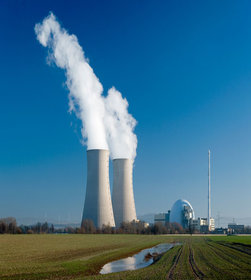

Na ovoj stranici cete pronaci najbolju maglu na trzistu.U ponudi su brojni artikli sve po skoro niskim cjenama.
MADE BY NewFaith
Ukratko objasnjen koncept mozete pronaci ispod:
Nacini kreacije
Postupak kreiranja magle je jako slozen proces koji se sastoji iz vise djelova.
Neki od djelova su :Izrada nicega , Komercijaliziranja nicega, Ubjedjivanja krostinika u korisnosti nicega,
Odrzavanje nicega te brojni drugi koji su poslovna tajna majstora ovog zanata.
- Izrada nicega
Zapocinje jednosavnim planom da se uradi apsolutno nista ali prilikom toga morate sracunati i dobit.
Troskova nema zato nemate potrebe razmisljati o amortizasciji.Naime vas plan je da kreirate pogodno
ime za vas proizvod.npr *STROJ IZ MAGLE*
- Komercijalizacija
Kada pricamo o komercijalizaciji produkta potrebno je napraviti jako dobru reklamu da biste
navedeno genijalno ime vaseg proizvoda uspjesno reklamirali.Ukratko dobra reklama.
Jedna od ideja *Cudesni stroj iz magle pretvara vas kapital u beskorisni papir*
- Ubjedjivanje korisnika
Ovaj korak je uglavnom i najlaksi jer korisnicima je vazno uglavnom boja i koliko placaju produkt
kao sto vidite roza boja je prikladna za pozadinu za ugodno citanje ugovora. Vazno je i naglasiti
da cijena je najmanji problem jer je za svakoga ona drugacija te se jako lako postigne dogovor.
Brojne vladine ustanove , obrazovne ustanove te nevladine organizacije se uglavnom sluze ovim metodama.
MOTO:ZASTO NE I VI
|
 |
ARTIKLI:
- Program radi sve (80 BAM)
- Program radi nista (40 BAM)
- Blank web stranica(100 BAM)
- Kopirana tudja web stranica(150 BAM)
- Tajna SRTOJA MAGLE(po dogovoru)
- Nasa knjiga uglavnom magle(500 BAM)
- Instrukcije (50 BAM/Satu)
- Naruci svoju maglu(po dogovoru)
|